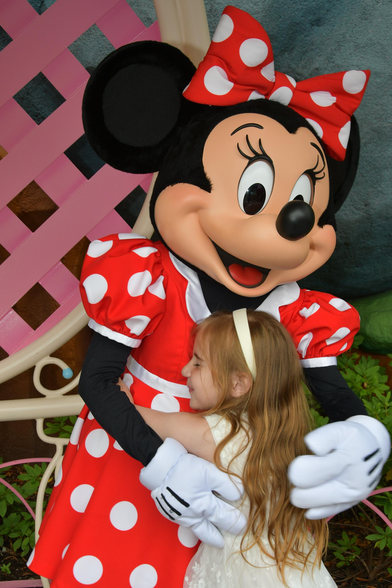

My first contact with computers wasn't with Windows or a Mac, it was with a machine running what I now recognize as a DOS-like operating system. As a teenager, I spent hours navigating folders, discovering old work documents, hidden games, and remnants of the previous owner's files. It wasn't programming, but it sparked something: a fascination with how things worked behind the interface.
Years later, while studying Electronics Engineering, I was introduced to programming through LabVIEW, C, C++, and MATLAB. At the time, I focused more on hardware design than software, but the logic and problem-solving of programming left a mark. I always wondered what I could build if I had the chance to explore software development in depth.
That curiosity stayed with me over the years, until I finally decided to pursue it seriously. Today, I'm combining my engineering background with a growing set of software development skills, and I'm eager to bring structure, logic, and creativity into building real-world solutions.
Early Life
I was born and raised in Culiacan, Sinaloa, Mexico, where I spent over 20 years of my life. I'm the youngest of nine children my mother had, her strength and sacrifice deeply shaped the way I understand responsibility and family. My childhood, like most, was a mix of joy and hardship, but from an early age I developed a strong interest in technology. That curiosity eventually led me to pursue a degree in Electronics Engineering at a nationally recognized network of technological institutes in Mexico.
I made the decision to complete my studies in the city of Tijuana, drawn by its concentration of electronics manufacturing companies and tech employment opportunities. However, life took a sharp turn when my mother fell seriously ill while living in Youngstown, Ohio. I sold my home and moved there to be with her during what I believed could be her final days.
As my savings ran out, I had to shift focus and begin working. During this period, I met a coworker who would later become my wife. We settled in Youngsville, Pennsylvania, and had a daughter together. Unfortunately, due to ongoing interpersonal conflicts within the household, my marriage ended in divorce. Despite the emotional toll, I remained committed to being present in my daughter's life.
With the support of my sister in Columbus, Ohio, I began rebuilding. I currently live with her while working on regaining full independence. Through legal efforts, I was granted 50% legal custody of my daughter, and we now spend meaningful time together. Most recently, we shared a week-long adventure in California, exploring places like Disneyland and SeaWorld, memories that anchor me in the present and inspire me for the future.

My daughter and Minnie Mouse at Disneyland.
Education
I began my academic journey in Electronics Engineering in 1999, motivated by a deep interest in understanding and creating technological systems. I studied within the national system of technological institutes in Mexico, which has a strong reputation for producing highly capable engineers in fields such as automation, telecommunications, embedded systems, and control.
The program provided a comprehensive foundation in the design, analysis, and implementation of electronic systems and devices. I learned to approach technical problems methodically, applying international standards and best practices in system design. I developed a strong interdisciplinary foundation through courses in analog and digital electronics, signal processing, embedded programming (in C/C++), and tools like MATLAB and LabVIEW.
My training also emphasized sustainable innovation, systems modeling, and the development of user interfaces for human-machine interaction. One key area of focus was learning to simulate and predict the behavior of electronic systems using computational platforms and skills that align closely with the problem-solving mindset I carry into software development today.
My degree was awarded on ceremonial parchment, a Mexican tradition denoting formal accreditation. This is some sort of a blend of a U.S. diploma and notarized credential with centuries old flair! For verification or curiosity, you're very welcome to check out a scanned copy of my diploma in the Gallery section.
Career
My professional path has taken me through diverse industries, cultures, and disciplines, from engineering design and manufacturing in Mexico, to fraud analysis in the U.S. financial sector. Throughout each stage, I've built resilience, technical insight, and the ability to adapt and grow in new environments.
After completing my degree in Electronics Engineering, I worked for a number of American and Japanese companies operating in Mexico. I began my career at Rain Bird, where I created commercial irrigation system layouts. I then joined Teledyne, taking on an Industrial Engineering role that involved organizing production lines, training staff, and calibrating precision equipment. Later, I returned to design work at Grotto Cellar, developing custom cabinetry for wine storage, before joining Mitsubishi Elevator as a design engineer, a role I held for eight years, contributing to elevator system design and technical documentation for commercial and government buildings.
Upon relocating to the United States, I initially worked as an electrician for Cocca Development, a construction company based in Youngstown, Ohio. To stay close to my wife and daughter, I later transitioned to Walmart, where I remained until a new chapter opened.
In 2022, I joined JPMorgan Chase in Columbus, Ohio, as a Fraud Specialist. In just over two years, I've advanced from level I to level III. My role involves investigating complex fraudulent activity related to deposit accounts, identifying patterns, and contributing to both customer recovery and loss prevention. I work cross-functionally with teams in Risk, Compliance, and Customer Support, always balancing analytical rigor with empathy for the people behind the cases. I've also applied continuous improvement strategies, helping optimize internal processes through insights gained from case handling.
Working at Chase has been an honor. It has allowed me to develop a deeper understanding of financial systems and reinforced my commitment to build tools that prevent and resolve the very types of problems I analyze daily. My transition to software engineering is a natural evolution of that commitment to go from solving cases to building solutions.